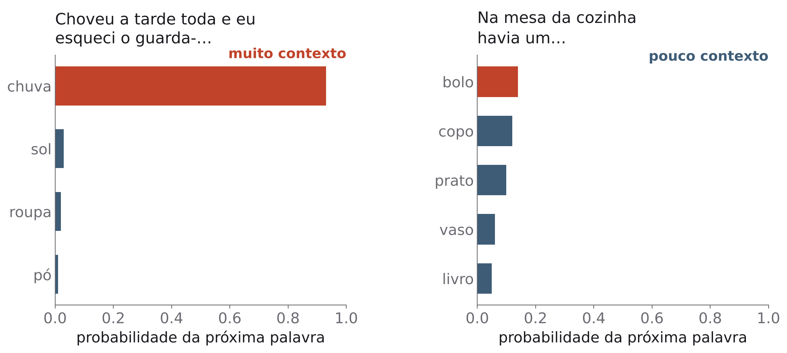
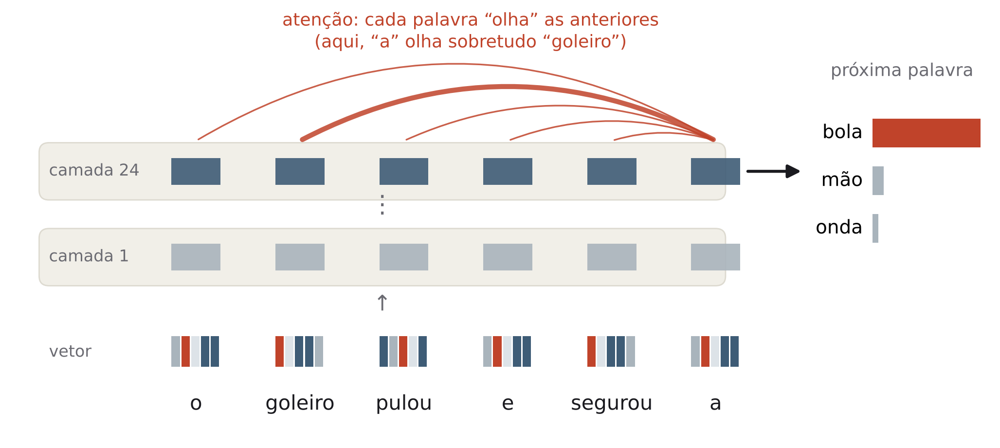
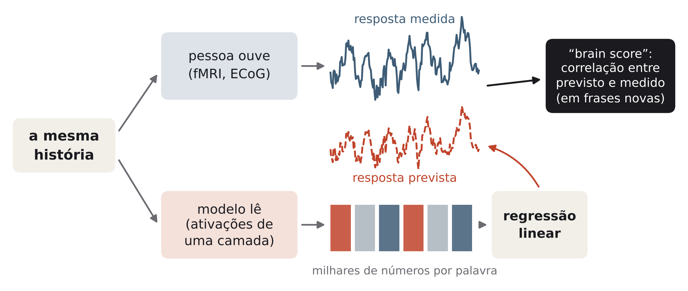
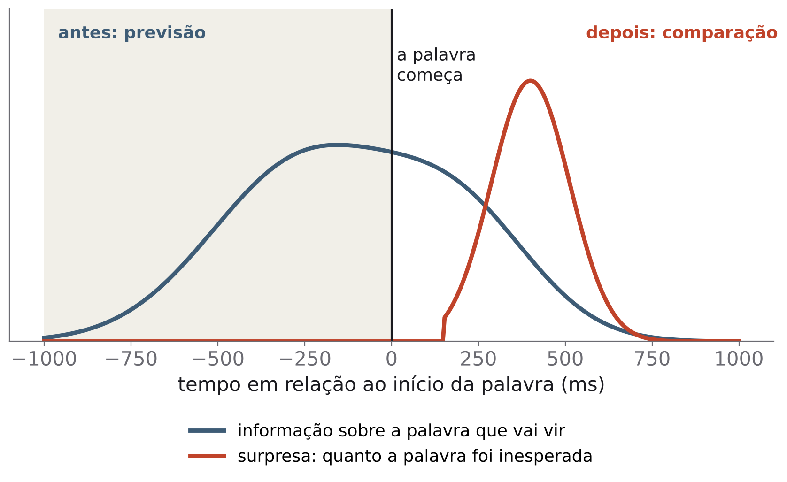
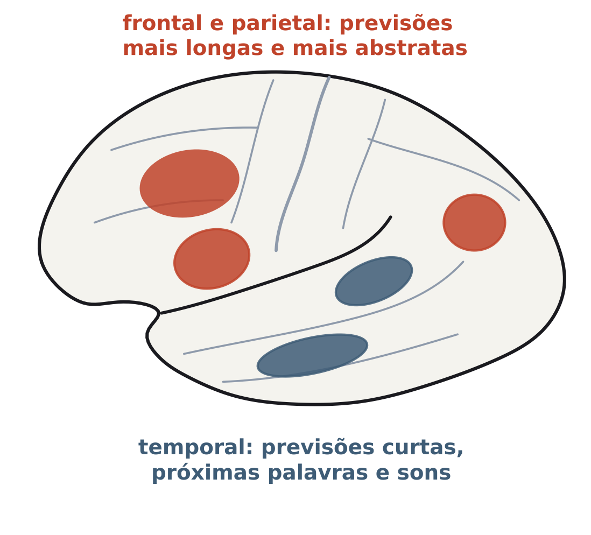
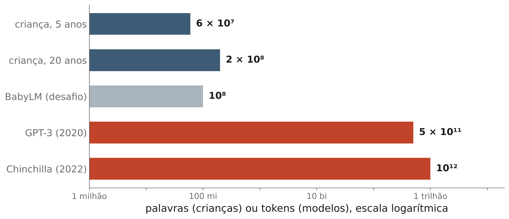

O que máquinas treinadas para prever a próxima palavra nos ensinaram sobre como o cérebro processa a linguagem, e onde elas deixam de se parecer conosco
Os assistentes de conversa do celular funcionam com modelos de linguagem grandes (LLMs, da sigla em inglês). Eles foram feitos por engenheiros, não para imitar o cérebro, mas viraram uma ferramenta central para quem estuda as bases neurais da linguagem. O que essas máquinas ensinaram sobre o cérebro? Bastante, mas com limites claros.
Um modelo de linguagem faz uma coisa só. Recebe o começo de um texto e devolve uma lista de probabilidades para o que vem depois. Em “Choveu a tarde toda e eu esqueci o guarda-…”, quase toda a probabilidade vai para “chuva”. Em “Na mesa da cozinha havia um…”, a probabilidade se espalha por muitas palavras (figura 1). Para escrever um texto, o modelo sorteia uma palavra da lista, acrescenta ao texto e repete.
Na verdade, o modelo trabalha com tokens: pedaços de texto que podem ser uma palavra curta (“mesa”), parte de uma palavra longa ou um sinal de pontuação. Por isso o tamanho do treino de um modelo costuma ser contado em tokens, não em palavras.

Você já viu essa ideia na aula 5. A probabilidade de cloze de uma palavra é a proporção de pessoas que completam uma frase com ela. Kutas e Hillyard (1984) mostraram que a amplitude do N400 é uma função inversa dessa probabilidade: quanto menos esperada a palavra, maior o N400. Palavras inesperadas, mas relacionadas à palavra esperada, geram N400 menor (Kutas; Hillyard, 1984).
Para medir o quanto uma palavra é inesperada, os pesquisadores usam a surpresa: o logaritmo da probabilidade com o sinal trocado (−log p). Se a palavra tem probabilidade 1 (certeza), a surpresa é zero. Se a probabilidade cai pela metade, a surpresa sobe um degrau; se cai pela metade de novo, sobe mais um degrau. E por que o logaritmo? Num estudo de leitura, com rastreamento ocular e leitura palavra por palavra, o tempo de leitura cresceu com o logaritmo da previsibilidade, numa faixa de “seis ordens de grandeza” de previsibilidade. Os leitores são sensíveis a diferenças relativas, mesmo entre palavras muito pouco previsíveis (Smith; Levy, 2013).
Aqui entra a primeira contribuição prática dos modelos. Um teste de cloze exige dezenas de pessoas por frase. Um modelo de linguagem dá uma probabilidade para cada palavra de qualquer texto, inclusive de um audiolivro inteiro. Por isso os modelos viraram uma “régua” de previsibilidade para estudos de leitura e de atividade cerebral (Heilbron et al., 2022).
Os modelos atuais usam uma arquitetura chamada transformer, proposta em 2017 para tradução automática (Vaswani et al., 2017). Três ideias bastam para entendê-la (figura 2).
Vetor. Cada palavra (ou token) é representada por um vetor: uma lista de centenas ou milhares de números. Pense num endereço com muitas coordenadas em vez de duas. Palavras usadas em contextos parecidos acabam com vetores parecidos, isto é, “moram perto”.
Atenção. Em cada etapa, o vetor de cada palavra é atualizado com informação das palavras anteriores. O quanto cada palavra anterior pesa é a atenção, e esses pesos são aprendidos. No exemplo da figura 2, o artigo “a” olha sobretudo para “goleiro”, o que torna “bola” a continuação mais provável.
Camadas. O processo se repete em várias camadas. Nas camadas intermediárias, o vetor de uma palavra já depende do contexto: “banco” da praça e “banco” do dinheiro ficam com vetores diferentes. São esses vetores contextuais, camada por camada, que os neurocientistas comparam com o cérebro (seção 3).

Ninguém ensina gramática ao modelo. Ele lê enormes quantidades de texto e, a cada palavra, tenta prever a seguinte. Quando erra, seus parâmetros, os números internos que definem os vetores e os pesos da atenção, mudam um pouco, para errar menos da próxima vez. Um modelo grande tem bilhões de parâmetros. Depois de muitas repetições, o que sobra é um sistema que prevê bem.
O surpreendente é o que aparece no caminho. Manning e colegas (2020) estudaram modelos treinados apenas para adivinhar uma palavra escondida no meio de uma frase, sem nenhuma informação explícita sobre gramática. Partes desses modelos se especializaram em relações sintáticas, como a de sujeito e verbo, e em descobrir a quem um pronome se refere. Mais ainda: uma transformação simples (linear) dos vetores recupera “a um grau surpreendente” as distâncias entre as palavras na árvore sintática, o que permite reconstruir de forma aproximada as árvores que os linguistas desenham (Manning et al., 2020). São as árvores de constituintes da aula 6.
O que isso quer dizer e o que não quer. A estrutura hierárquica das frases pode emergir, pelo menos em parte, de uma tarefa estatística simples aplicada a muitos dados. Isso conversa com a perspectiva baseada no uso da aula 11, para a qual a criança extrai padrões do que ouve. Mas não prova que a criança aprende assim, nem que o modelo “sabe gramática” como um linguista: a estrutura está codificada nos vetores e pode ser lida com uma regra simples. Se o caminho é o mesmo da criança é uma pergunta da seção 6.
Se um modelo e um cérebro processam a mesma frase, como saber se fazem algo parecido? A estratégia mais usada é o modelo de codificação (figura 3). Ele tem três passos.

Se uma ponte tão simples funciona em dados novos, a informação que o cérebro usa está presente nos vetores do modelo. Isso não prova que o cérebro calcula do mesmo jeito: sistemas muito diferentes podem conter a mesma informação.
O contexto importa. Jain e Huth (2018) usaram os vetores contextuais de um modelo de linguagem mais antigo, uma rede recorrente que lê as palavras em ordem (LSTM). Esses vetores previram as respostas de fMRI muito melhor do que vetores de palavras isoladas, em quase todas as áreas do cérebro. Parte do ganho veio de vetores melhores, parte da informação de contexto, e a sensibilidade ao contexto variou ao longo do córtex (Jain; Huth, 2018).
Prever palavras é o que conta. Num estudo amplo, Schrimpf e colegas compararam dezenas de modelos com dados de fMRI e de ECoG. Os transformers mais potentes previram “quase 100%” da variância explicável das respostas a frases, isto é, da parte do sinal que se repete quando a mesma frase é apresentada de novo, e não é ruído. O achado mais importante foi outro: o ajuste ao cérebro acompanhava o desempenho do modelo em prever a próxima palavra, e não em outras tarefas linguísticas. Os autores interpretam isso como evidência de que o processamento preditivo molda a compreensão da linguagem (Schrimpf et al., 2021). Caucheteux e King (2022) chegaram a uma conclusão parecida com fMRI e MEG de 102 pessoas lendo 400 frases: a semelhança entre algoritmo e cérebro dependia sobretudo da capacidade de prever palavras. O título do artigo resume o tom: cérebros e algoritmos convergem parcialmente (Caucheteux; King, 2022).
Não é preciso um modelo gigante. Hosseini e colegas treinaram modelos com 1 milhão, 10 milhões, 100 milhões e 1 bilhão de palavras. Com 100 milhões, uma quantidade parecida com o que uma criança recebe nos primeiros dez anos de vida, o modelo já chegava perto do ajuste máximo às respostas de fMRI. De novo, prever melhor a próxima palavra acompanhava um ajuste maior (Hosseini et al., 2024).
Se os modelos que preveem melhor são os que mais se parecem com o cérebro, o cérebro também está prevendo? Três estudos atacaram essa pergunta de frente.
Antes e depois da palavra. Goldstein e colegas registraram ECoG em nove pessoas ouvindo um podcast de 30 minutos. Encontraram três princípios em comum com os modelos que geram texto palavra por palavra (figura 4). Primeiro, o cérebro carrega informação sobre a próxima palavra antes de ela começar a ser dita. Segundo, depois que a palavra chega, ele a compara com a previsão, e aparece um sinal de surpresa. Terceiro, as palavras são representadas por vetores que dependem do contexto (Goldstein et al., 2022).

Previsões em vários níveis. Heilbron e colegas usaram um modelo de linguagem (o GPT-2) para calcular, palavra por palavra, o quanto cada palavra de um audiolivro era previsível, e registraram o cérebro de quem ouvia. As respostas às palavras eram moduladas por previsões o tempo todo. Havia assinaturas separadas para previsões da classe da palavra (substantivo, verbo…), do significado e dos sons (fonemas), e as previsões de nível mais alto informavam as de nível mais baixo (Heilbron et al., 2022).
Previsões em várias escalas de tempo. Caucheteux, Gramfort e King analisaram fMRI de 304 pessoas ouvindo histórias. Os vetores do modelo se mapeavam linearmente na atividade cerebral, mas o mapeamento melhorava quando se acrescentavam ao modelo previsões de várias palavras à frente, e não só da próxima. Essas previsões se organizavam numa hierarquia: regiões temporais pareciam prever a curto prazo, e regiões frontais e parietais, representações de nível mais alto, de alcance mais longo e mais dependentes do contexto (Caucheteux; Gramfort; King, 2023) (figura 5).

Aqui aparece a primeira lição das diferenças: o modelo prevê uma palavra de cada vez; o cérebro parece prever em várias escalas de tempo ao mesmo tempo. A comparação serve para achar semelhanças e também para sugerir como melhorar os modelos.
Prever está em toda parte. Na aula 5, o N400 era maior para palavras pouco esperadas. Na aula 10, vimos que, numa conversa, a resposta costuma vir tão rápido depois do fim do turno do outro que não dá para começar a planejá-la só quando ele termina: é preciso antecipar. Os estudos desta seção sugerem que essa antecipação acontece palavra por palavra, o tempo todo, mesmo quando só ouvimos.
Um bom modelo do cérebro permite fazer experimentos novos. Tuckute e colegas registraram com fMRI a resposta da rede da linguagem (as regiões frontais e temporais, sobretudo à esquerda, da aula 6) a 1.000 frases variadas. Com esses dados, treinaram um modelo de codificação baseado num modelo de linguagem da família GPT, capaz de prever o quanto a rede responde a cada frase. Depois usaram o modelo para escolher frases novas que deveriam aumentar ou diminuir a resposta da rede. Em pessoas que nunca tinham participado, as frases fizeram o que o modelo previa. O que mais pesou foi a surpresa da frase e o quanto ela era bem formada (Tuckute et al., 2024). É uma mudança de patamar: de descrever a resposta do cérebro para controlá-la, de forma não invasiva.
Três resultados ajudam a não exagerar o que essas comparações dizem.
Mais significado que sintaxe. Kauf e colegas usaram fMRI de 627 frases e as manipularam: embaralharam a ordem das palavras, removeram palavras, trocaram frases por outras de sentido mais ou menos parecido. O que mais sustentava a semelhança entre modelo e cérebro era o conteúdo léxico-semântico, carregado sobretudo pelas palavras de conteúdo (substantivos, verbos, adjetivos). A forma sintática, como a ordem das palavras e as palavras funcionais (“de”, “que”, “o”), pesava menos (Kauf et al., 2024). Ou seja, um “brain score” alto não significa que o modelo capturou a sintaxe do jeito que o cérebro a processa.
Modelos maiores, ajuste maior, mas devagar. Antonello, Vaidya e Huth testaram modelos de 125 milhões a 30 bilhões de parâmetros. A previsão do cérebro cresceu com o logaritmo do tamanho: cada aumento de dez vezes rendeu um ganho parecido, e o ganho total foi de cerca de 15% na correlação, medido em três pessoas. Para algumas regiões, os melhores modelos chegaram perto do limite imposto pelo ruído da medida (Antonello; Vaidya; Huth, 2023).
Ler o sentido no fMRI. Tang e colegas construíram um decodificador, isto é, um sistema que faz o caminho inverso: parte da atividade cerebral medida por fMRI e reconstrói sequências de palavras inteligíveis que capturam o sentido de histórias ouvidas, de histórias imaginadas e até de vídeos sem som. O sentido pôde ser decodificado de várias regiões do córtex, de forma independente. O sistema exigiu muitas horas de registro de cada pessoa, e os autores mostraram que ele só funciona com a cooperação dela, tanto para treinar quanto para usar (Tang et al., 2023). A questão da privacidade é a mesma da pergunta para casa da aula 12. Lembre também do experimento 4 daquela aula: o decodificador simulado errava menos quando um modelo de linguagem ajudava a escolher a frase mais provável.
As diferenças ensinam tanto quanto as semelhanças. É a lógica da aula 13: comparar sistemas diferentes para separar o que é necessário do que é acidental. O modelo de linguagem é um terceiro tipo de sistema, nem animal nem humano.
Em “A chave dos armários está na mesa”, o verbo concorda com o núcleo do sujeito (“chave”), não com a palavra mais próxima (“armários”). Essa palavra intrusa se chama atrator, e ela provoca erros de concordância em falantes. Por isso a concordância virou um teste de sensibilidade à estrutura: para acertar, é preciso saber qual palavra manda na frase, e não só a ordem.
Linzen, Dupoux e Goldberg (2016) testaram redes recorrentes com esse tipo de frase. Treinadas diretamente para escolher o número do verbo, erravam menos de 1% das vezes. Os erros aumentavam quando a ordem e a estrutura apontavam em direções diferentes, como com atratores, e subiam bastante quando as redes eram treinadas só para prever palavras (Linzen; Dupoux; Goldberg, 2016). Linzen e Leonard (2018) compararam então os erros das redes com os de pessoas. As taxas gerais eram parecidas, e havia semelhanças, como os próprios erros de atração. Mas em frases com orações relativas (“a chave que os armários…”) as redes erravam mais, e as pessoas, menos. E vários atratores na mesma frase somavam erros nas redes, mas não nas pessoas. A conclusão dos autores foi que as representações sintáticas das redes eram “fundamentalmente diferentes” das humanas (Linzen; Leonard, 2018).
Os modelos atuais são muito melhores nessa tarefa do que as redes de 2016. A lição é de método: para comparar com pessoas, é preciso comparar o padrão de erros.
Quanto texto uma criança ouve? Michael Frank fez a conta. Uma estimativa generosa é de cerca de 1 milhão de palavras por mês, o que dá cerca de 60 milhões (6 × 10⁷) aos 5 anos e 200 milhões (2 × 10⁸) aos 20. Em ambientes com pouca conversa, a entrada pode ser dez vezes menor. Já o GPT-3, de 2020, foi treinado com cerca de 500 bilhões (5 × 10¹¹) de tokens, e o modelo Chinchilla, de 2022, com cerca de 1 trilhão (10¹²). A diferença chega a “até cinco ordens de grandeza”, ou seja, até cem mil vezes (Frank, 2023) (figura 6). Comparando só a criança de 5 anos com o GPT-3, a razão é de cerca de oito mil vezes (Frank, 2023).

O desafio BabyLM tentou diminuir essa distância. Partindo da ideia de que crianças aprendem a língua com menos de 100 milhões de palavras, enquanto os modelos costumam usar de mil a dez mil vezes mais, os organizadores convidaram equipes a treinar modelos com no máximo 10 ou 100 milhões de palavras. Vieram 31 artigos e 162 modelos. Houve progresso, mas uma ideia intuitiva, ensinar “do mais fácil para o mais difícil” como se faz com crianças, foi em grande parte malsucedida (Warstadt et al., 2023).
O que a criança tem que o modelo não tem? A aula 11 dá pistas: fala dirigida a ela, atenção conjunta, retorno social, um corpo que age no mundo e a leitura das intenções de quem fala, que na perspectiva de Tomasello é essencial para aprender palavras. Lembre, porém, da seção 3: com uma quantidade de texto da ordem da que a criança ouve, o modelo já prevê bem a resposta do cérebro a frases. Prever o cérebro e aprender a língua inteira não são a mesma coisa.
Oh e Schuler (2023) testaram modelos de tamanhos diferentes contra o tempo de leitura de pessoas. Os modelos maiores, que preveem melhor o texto, produziam surpresas que previam pior o tempo de leitura humano. Eles subestimavam o esforço de ler nomes próprios e superestimavam o de palavras funcionais. Os autores atribuem isso à tendência dos modelos grandes de “decorar” sequências que uma pessoa não teria como conhecer (Oh; Schuler, 2023). Compare com a seção 5, em que modelos maiores previam melhor o fMRI: a resposta depende da medida.
Mahowald e colegas (2024) propuseram separar duas coisas. A competência linguística formal é o conhecimento das regras e padrões da língua: sons, palavras, concordância, ordem, frases bem formadas. A competência linguística funcional é usar a língua no mundo: raciocinar, saber como as coisas funcionam, entender as pessoas, acompanhar uma situação. No cérebro humano, as duas dependem de mecanismos diferentes: a formal, da rede da linguagem (aula 6); a funcional, de outras capacidades, como o raciocínio e a teoria da mente (aula 10). Os LLMs, segundo os autores, eram “surpreendentemente bons” na forma e irregulares na função, que muitas vezes exigia ajustes especiais ou módulos externos (Mahowald et al., 2024).
Essa distinção vem de anos de estudos sobre o cérebro. Fedorenko, Piantadosi e Gibson (2024) revisaram as evidências de dupla dissociação entre linguagem e pensamento, como a de pessoas com afasia grave que continuam raciocinando (aula 12) e a de uma rede da linguagem que quase não responde a tarefas sem linguagem (aula 6). Eles argumentam que a linguagem é antes de tudo uma ferramenta de comunicação, poderosa para transmitir conhecimento cultural, e não um pré-requisito para o pensamento complexo (Fedorenko; Piantadosi; Gibson, 2024).
Uma lição para os dois lados. Um texto fluente não prova que há raciocínio por trás, nem num modelo nem numa pessoa. E a falta de fluência não prova a falta de raciocínio: uma pessoa com afasia pode pensar perfeitamente bem.
Um cuidado: os modelos mudam muito rápido. Vários estudos desta aula usaram modelos de 2016 a 2023, e o desempenho funcional melhorou bastante desde então. O que fica é a distinção entre forma e função, não um retrato fixo do que os modelos conseguem fazer hoje.
Strachan e colegas (2024) aplicaram a modelos de linguagem e a 1.907 pessoas uma bateria de testes de teoria da mente: crenças falsas (como o teste de Sally e Anne da aula 10), pedidos indiretos, ironia e gafes. O GPT-4 ficou no nível humano, às vezes acima, em pedidos indiretos, crenças falsas e despistamento, mas teve dificuldade com as gafes. A análise sugeriu que isso vinha de uma postura “hiperconservadora”, de evitar tirar conclusões, e não de falha de inferência (Strachan et al., 2024). Fica a pergunta: um teste criado para crianças mede a mesma coisa quando aplicado a um sistema que leu milhões de textos sobre testes como esse?
Bender e Koller (2020) argumentaram que um sistema treinado apenas na forma do texto não tem, a princípio, como aprender significado, porque nunca liga as palavras a coisas, ações ou intenções no mundo. Eles criticaram o hábito de dizer que esses modelos “entendem” a língua (Bender; Koller, 2020). Quem discorda responde que muito do significado pode estar refletido no próprio uso das palavras, e que nada impede treinar modelos também com imagens e com interação. Com que dados e com que experiência o significado aparece é uma pergunta aberta.
Os céticos apontam que os modelos aprendem com dados demais e de outro tipo, erram de jeitos não humanos e, por serem tão opacos quanto o cérebro, preveem sem explicar. Os entusiastas lembram que a estrutura gramatical pode ser aprendida só do uso, que os modelos preveem a atividade cerebral melhor do que qualquer teoria anterior e que, ao contrário de pessoas, podem ser abertos, modificados e testados à vontade.
Futrell e Mahowald (2026, publicado online em 2025) defendem uma posição intermediária. Os modelos de linguagem não substituem a teoria linguística nem a ideia de estrutura, mas contribuem para questões fundamentais sobre estrutura, processamento e aprendizagem. Eles desafiam argumentos estabelecidos e servem como sistemas-modelo para abordagens graduais e baseadas no uso (Futrell; Mahowald, 2026). É o mesmo papel que os saguis e as aves tiveram na aula 13: não são humanos, e é justamente por isso que a comparação ensina.
Experimento 1: próxima palavra. Vocês completaram 16 frases, metade com muito contexto (“Papai…”, “guarda-…”) e metade com pouco (“Na mesa da cozinha havia um…”). O esperado é que quase todos acertem as frases de muito contexto e poucos acertem as abertas. A turma funcionou como um modelo de linguagem coletivo: a proporção de pessoas que escreveu cada palavra é a probabilidade de cloze, e as palavras que quase ninguém previu são as que produziriam um N400 maior (Kutas; Hillyard, 1984).
Experimento 2: modelo de bolso. O “modelo” leu um texto de umas 550 palavras e só contava que palavra vinha depois de qual. Com contexto de uma palavra, o esperado é uma sopa de palavras soltas; com duas, pedaços locais fazem sentido; com três, as frases ficam fluentes, mas copiam trechos inteiros do texto, porque o modelo viu poucos exemplos de cada sequência. Os LLMs fazem a mesma tarefa com contexto de milhares de palavras, muito mais texto e, sobretudo, vetores em que palavras parecidas ficam próximas, o que permite generalizar em vez de copiar (seção 2).
Experimento 3: concordância. A frase aparecia por 1,5 segundo, e vocês escolhiam “está” ou “estão”. O esperado é mais erros, e respostas mais lentas, quando o atrator tem número diferente do núcleo (“a chave dos armários”), sobretudo com núcleo singular e atrator plural. Quantos erros cada pessoa comete varia muito; com só 12 frases de cada tipo, muita gente pode não errar nenhuma. A comparação com as redes está na seção 6 (Linzen; Dupoux; Goldberg, 2016; Linzen; Leonard, 2018).
Experimento 4: quanto texto? As estimativas costumam se espalhar por várias ordens de grandeza, e muita gente subestima a distância entre a criança e o modelo. Pelos valores de referência, a criança ouve cerca de 6 × 10⁷ palavras aos 5 anos e o GPT-3 leu 5 × 10¹¹ tokens, uma razão de cerca de oito mil vezes (Frank, 2023). Vale lembrar que tokens e palavras não são a mesma unidade, então a comparação é aproximada.
Experimento 5: forma ou função? Os casos mais fáceis costumam ser os de concordância e ordem das palavras (formais) e o do sorvete que derrete (funcional). Os mais confundidos costumam ser o problema de matemática em palavras, que parece “de linguagem” mas exige raciocínio, e a frase “Ideias verdes incolores dormem furiosamente”, que não tem sentido mas tem a gramática certa. Na pergunta sobre o modelo, a expectativa é que ele vá melhor nos casos formais (Mahowald et al., 2024); lembre que essa avaliação é de 2024 e que os modelos mudam rápido.
Por que a surpresa (−log p) é uma medida melhor do que a própria probabilidade para prever o tempo de leitura?
Resposta
Porque o tempo de leitura cresce com o logaritmo da previsibilidade, numa faixa enorme de valores. Isso quer dizer que o que importa são as diferenças relativas: passar de 1 em 1.000 para 1 em 10.000 pesa tanto quanto passar de 1 em 10 para 1 em 100. A surpresa captura exatamente isso.
Um modelo de codificação com um modelo de linguagem prevê bem a atividade da rede da linguagem. Por que isso não prova que o cérebro funciona como o modelo?
Resposta
O resultado mostra que a informação usada pelo cérebro está presente nos vetores do modelo, a ponto de uma regressão simples recuperá-la. Mas sistemas muito diferentes podem conter a mesma informação. Além disso, Kauf e colegas mostraram que a semelhança vem sobretudo do significado das palavras, e não da sintaxe.
Que achado do estudo de Schrimpf e colegas liga os modelos à ideia de que o cérebro prevê?
Resposta
O ajuste dos modelos ao cérebro acompanhava o desempenho deles em prever a próxima palavra, e não em outras tarefas linguísticas. Se o que torna um modelo parecido com o cérebro é prever bem, uma interpretação natural é que o cérebro também está prevendo.
Descreva os três princípios que Goldstein e colegas acharam em comum entre cérebro e modelos. Que ligação há com a troca de turnos da aula 10?
Resposta
O cérebro carrega informação sobre a próxima palavra antes de ela começar, calcula a surpresa depois que ela chega e representa as palavras por vetores que dependem do contexto. Na conversa, responder quase sem pausa exige antecipar o que o outro vai dizer e quando vai terminar; prever palavras é parte disso.
Redes treinadas para prever palavras também erram a concordância com atratores, como as pessoas. Por que Linzen e Leonard concluíram que elas processam a concordância de outro jeito?
Resposta
Porque o padrão de erros era diferente. Com orações relativas, as redes erravam mais e as pessoas, menos; e vários atratores somavam erros nas redes, mas não nas pessoas. Taxas de erro parecidas não bastam: é preciso comparar onde e por que cada sistema erra.
Uma criança de 5 anos ouviu talvez 60 milhões de palavras; o GPT-3 leu cerca de 500 bilhões de tokens. Cite duas coisas que a criança tem e o modelo de texto não tem, segundo a aula 11.
Resposta
Por exemplo: fala dirigida a ela e retorno social contingente dos adultos; atenção conjunta e leitura das intenções de quem fala; um corpo que vê, toca e age no mundo em que as palavras são usadas. Essas fontes de informação podem compensar parte da diferença de quantidade de dados.
Um modelo escreve um texto fluente sobre dor de dente. Use a distinção entre competência formal e funcional e um dado da aula 12 para discutir se isso mostra que ele entende o que é ter dor de dente.
Resposta
Fluência é competência formal, que no cérebro depende da rede da linguagem; entender, raciocinar e ter experiência do mundo são competências funcionais, que dependem de outras redes. Na afasia, a forma se perde e o pensamento continua, o que mostra que uma não é a outra. Por isso a fluência sozinha não prova entendimento, e, segundo Bender e Koller, um sistema que só vê texto talvez nem tenha como ligar as palavras à experiência.
Por que Futrell e Mahowald comparam os modelos de linguagem a sistemas-modelo, como os saguis e as aves da aula 13?
Resposta
Porque são sistemas diferentes de nós que compartilham alguns componentes da linguagem. Comparar o que eles conseguem e como erram ajuda a testar ideias sobre o que é necessário para aprender e processar a língua. E, ao contrário de pessoas, os modelos podem ser modificados à vontade, o que permite experimentos impossíveis com humanos.
ANTONELLO, R.; VAIDYA, A.; HUTH, A. Scaling laws for language encoding models in fMRI. In: ADVANCES IN NEURAL INFORMATION PROCESSING SYSTEMS 36 (NeurIPS 2023), 2023. Proceedings […]. 2023. p. 21895-21907. Disponível em: https://papers.nips.cc/paper_files/paper/2023/hash/4533e4a352440a32558c1c227602c323-Abstract-Conference.html.
BENDER, E. M.; KOLLER, A. Climbing towards NLU: on meaning, form, and understanding in the age of data. In: ANNUAL MEETING OF THE ASSOCIATION FOR COMPUTATIONAL LINGUISTICS, 58., 2020, Online. Proceedings […]. [S. l.]: Association for Computational Linguistics, 2020. p. 5185-5198. DOI: https://doi.org/10.18653/v1/2020.acl-main.463.
CAUCHETEUX, C.; GRAMFORT, A.; KING, J.-R. Evidence of a predictive coding hierarchy in the human brain listening to speech. Nature Human Behaviour, v. 7, n. 3, p. 430-441, 2023. DOI: https://doi.org/10.1038/s41562-022-01516-2.
CAUCHETEUX, C.; KING, J.-R. Brains and algorithms partially converge in natural language processing. Communications Biology, v. 5, art. 134, 2022. DOI: https://doi.org/10.1038/s42003-022-03036-1.
FEDORENKO, E.; PIANTADOSI, S. T.; GIBSON, E. A. F. Language is primarily a tool for communication rather than thought. Nature, v. 630, n. 8017, p. 575-586, 2024. DOI: https://doi.org/10.1038/s41586-024-07522-w.
FRANK, M. C. Bridging the data gap between children and large language models. Trends in Cognitive Sciences, v. 27, n. 11, p. 990-992, 2023. DOI: https://doi.org/10.1016/j.tics.2023.08.007.
FUTRELL, R.; MAHOWALD, K. How linguistics learned to stop worrying and love the language models. Behavioral and Brain Sciences, v. 49, e198, 2026. DOI: https://doi.org/10.1017/S0140525X2510112X.
GOLDSTEIN, A. et al. Shared computational principles for language processing in humans and deep language models. Nature Neuroscience, v. 25, n. 3, p. 369-380, 2022. DOI: https://doi.org/10.1038/s41593-022-01026-4.
HEILBRON, M. et al. A hierarchy of linguistic predictions during natural language comprehension. Proceedings of the National Academy of Sciences of the United States of America, v. 119, n. 32, e2201968119, 2022. DOI: https://doi.org/10.1073/pnas.2201968119.
HOSSEINI, E. A. et al. Artificial neural network language models predict human brain responses to language even after a developmentally realistic amount of training. Neurobiology of Language, v. 5, n. 1, p. 43-63, 2024. DOI: https://doi.org/10.1162/nol_a_00137.
JAIN, S.; HUTH, A. G. Incorporating context into language encoding models for fMRI. In: ADVANCES IN NEURAL INFORMATION PROCESSING SYSTEMS 31 (NeurIPS 2018), 2018. Proceedings […]. 2018. p. 6628-6637. Disponível em: https://proceedings.neurips.cc/paper_files/paper/2018/hash/f471223d1a1614b58a7dc45c9d01df19-Abstract.html.
KAUF, C. et al. Lexical-semantic content, not syntactic structure, is the main contributor to ANN-brain similarity of fMRI responses in the language network. Neurobiology of Language, v. 5, n. 1, p. 7-42, 2024. DOI: https://doi.org/10.1162/nol_a_00116.
KUTAS, M.; HILLYARD, S. A. Brain potentials during reading reflect word expectancy and semantic association. Nature, v. 307, n. 5947, p. 161-163, 1984. DOI: https://doi.org/10.1038/307161a0.
LINZEN, T.; DUPOUX, E.; GOLDBERG, Y. Assessing the ability of LSTMs to learn syntax-sensitive dependencies. Transactions of the Association for Computational Linguistics, v. 4, p. 521-535, 2016. DOI: https://doi.org/10.1162/tacl_a_00115.
LINZEN, T.; LEONARD, B. Distinct patterns of syntactic agreement errors in recurrent networks and humans. In: ANNUAL MEETING OF THE COGNITIVE SCIENCE SOCIETY, 40., 2018. Proceedings of the Annual Meeting of the Cognitive Science Society, v. 40, 2018. Disponível em: https://escholarship.org/uc/item/0623d3bt.
MAHOWALD, K. et al. Dissociating language and thought in large language models. Trends in Cognitive Sciences, v. 28, n. 6, p. 517-540, 2024. DOI: https://doi.org/10.1016/j.tics.2024.01.011.
MANNING, C. D. et al. Emergent linguistic structure in artificial neural networks trained by self-supervision. Proceedings of the National Academy of Sciences of the United States of America, v. 117, n. 48, p. 30046-30054, 2020. DOI: https://doi.org/10.1073/pnas.1907367117.
OH, B.-D.; SCHULER, W. Why does surprisal from larger transformer-based language models provide a poorer fit to human reading times? Transactions of the Association for Computational Linguistics, v. 11, p. 336-350, 2023. DOI: https://doi.org/10.1162/tacl_a_00548.
SCHRIMPF, M. et al. The neural architecture of language: integrative modeling converges on predictive processing. Proceedings of the National Academy of Sciences of the United States of America, v. 118, n. 45, e2105646118, 2021. DOI: https://doi.org/10.1073/pnas.2105646118.
SMITH, N. J.; LEVY, R. The effect of word predictability on reading time is logarithmic. Cognition, v. 128, n. 3, p. 302-319, 2013. DOI: https://doi.org/10.1016/j.cognition.2013.02.013.
STRACHAN, J. W. A. et al. Testing theory of mind in large language models and humans. Nature Human Behaviour, v. 8, n. 7, p. 1285-1295, 2024. DOI: https://doi.org/10.1038/s41562-024-01882-z.
TANG, J. et al. Semantic reconstruction of continuous language from non-invasive brain recordings. Nature Neuroscience, v. 26, n. 5, p. 858-866, 2023. DOI: https://doi.org/10.1038/s41593-023-01304-9.
TUCKUTE, G. et al. Driving and suppressing the human language network using large language models. Nature Human Behaviour, v. 8, n. 3, p. 544-561, 2024. DOI: https://doi.org/10.1038/s41562-023-01783-7.
VASWANI, A. et al. Attention is all you need. In: ADVANCES IN NEURAL INFORMATION PROCESSING SYSTEMS 30 (NIPS 2017), 2017. Proceedings […]. 2017. Disponível em: https://proceedings.neurips.cc/paper/7181-attention-is-all.
WARSTADT, A. et al. Findings of the BabyLM Challenge: sample-efficient pretraining on developmentally plausible corpora. In: BABYLM CHALLENGE AT THE CONFERENCE ON COMPUTATIONAL NATURAL LANGUAGE LEARNING, 27., 2023, Singapore. Proceedings […]. Singapore: Association for Computational Linguistics, 2023. p. 1-34. DOI: https://doi.org/10.18653/v1/2023.conll-babylm.1.
Material de estudo da disciplina Bases neurais da comunicação humana (UFRN), Prof. Daniel Y. Takahashi. Texto e figuras elaborados para o curso; as fontes estão nas Referências.